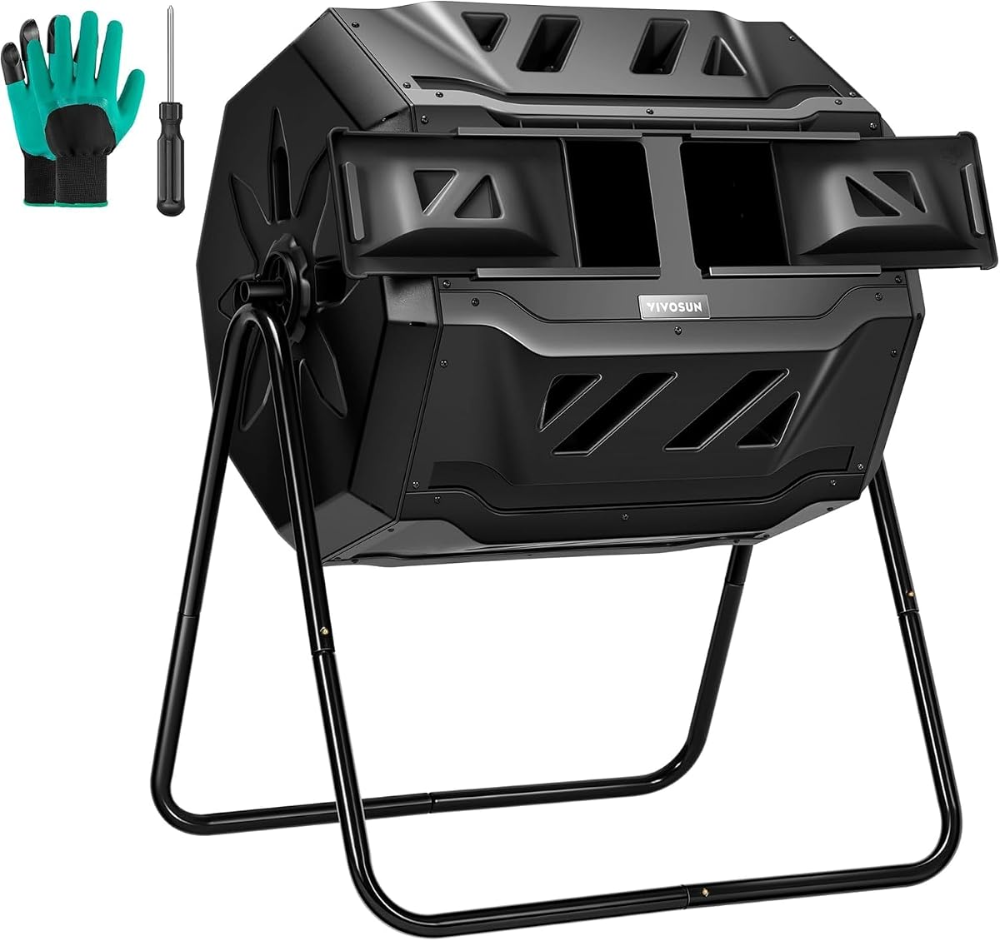

Review · Tumblers
VIVOSUN 43-Gallon Tumbler: the most compost per dollar in the twin-chamber class
43 gallons in a smaller footprint than the benchmark, a metal frame, and an Amazon’s Choice badge on 9,953 ratings — the value pick of our tumblers roundup, the real differences against the $100 tumblers, and what its numbers say before you buy.
Disclosure: the Amazon links on this page are affiliate links — if you buy through them we earn a commission at no extra cost to you. It never changes the verdict below; the numbers are VIVOSUN’s own, verified against the live listing on Nov 15, 2026.
One line: buy it if you want the most gallons for the fewest dollars with the same twin-chamber workflow as the benchmark; skip it if track record or turning comfort decides for you.
What the VIVOSUN 43 is
An octagonal drum with deep turning fins on eight panels, mounted on a raised galvanized-metal frame, split into two chambers — the same operating idea as every mainstream tumbler, executed with more plastic volume per dollar than the benchmark. The listing carries the Amazon’s Choice badge and 9,953 ratings at 4.3 stars (Nov 15, 2026), and the brand has sold this configuration long enough to be a permanent fixture of the category.
Two claims on the listing deserve the microscope because they are where value lives or dies: the 43-gallon capacity in a footprint smaller than the 37-gallon IM4000, and the air-vent design — the listing states the vents keep air circulating “without pressure buildup” while the deep fins break clumps during rotation. Both are consistent with the physical design; neither is a lab measurement, and we treat them as manufacturer specs.
The specs, verified
| Parameter | Value |
|---|---|
| Capacity | 43 gallons |
| Chambers | 2 — one drum split; whole drum rotates |
| Body | PP polypropylene drum, octagonal, deep fins on eight panels |
| Frame | Premium metal (galvanized steel), raised |
| Dimensions | 26.25″ L × 23.6″ W × 36.5″ H |
| Vents | Air vents through the drum (listing claim: circulation without pressure buildup) |
| Review base | 4.3 / 5 across 9,953 Amazon ratings (Nov 15, 2026) |
| Badge | Amazon’s Choice at capture |
| Price | $ tier — $67.99 and $79.99 observed across November 2026 |
How we verify listings and price tiers is on the methodology page.
43 gallons in a smaller box
The comparison that sells this tumbler is arithmetic. The VIVOSUN measures 26.25″ × 23.6″ on the ground and 36.5″ tall; the 37-gallon IM4000 occupies 30″ × 28″ and 36″. The VIVOSUN fits about 16% more volume into roughly 18% less footprint — real numbers from the two live listings, verified side by side Nov 15, 2026. For a fence line, a narrow side yard, or a corner where the benchmark physically does not fit, that geometry alone decides the purchase.
The listing also leans on black-drum heat absorption and calls the design rodent-resistant. Both are plausible — dark drums do run hotter, and a raised, closed drum is harder for pests to work than an open pile — but neither is tested here, and no tumbler in this class is critter-proof. Treat resistance as a habit problem you still own: troubleshooting covers what actually keeps animals off compost.
What it earns, and what it costs you
Per dollar, nothing in the verified lineup beats it: 43 gallons at a $ tier price that we observed at $67.99 earlier in November and $79.99 on Nov 15. The rating base is genuinely large (9,953 ratings) even if it runs a tenth of a star below the benchmark, and the metal frame matches the construction philosophy of the pricier mainstream drums.
What you give up is evidence depth and comfort. 9,953 ratings is a strong base but the IM4000’s 18,737 is the deepest signal in the class, and a full 43-gallon drum is heavy to rotate by hand on fins — the same critique FCMP built the HOTFROG to answer. Turning cadence is non-negotiable: two to three days, or the drum stalls like any tumbler (timelines here).
VIVOSUN 43 vs the rest of the lineup
Against the IM4000: more capacity, smaller footprint, lower price, thinner track record — pick on which of those four matters to you. Against the HOTFROG: the FCMP split-body spins each chamber independently for roughly half the effort of a loaded drum, at double the price. The full roundup keeps all seven verified tumblers side by side; the bins page covers the no-drum alternative.
The questions, answered
Is it really 43 gallons?
The listing states 43 gallons, and the published dimensions support a larger volume in a smaller footprint than the 37-gallon IM4000 (both verified Nov 15, 2026). Usable working volume is still whatever you can keep hot and turning — a full drum you never turn composts slower than a half drum you do.
Is it rodent-proof?
No product in this class is. The listing calls the design rodent-resistant, and a closed drum raised on a frame is genuinely harder for pests to work than an open bin, but resistance is not proof. The habits that matter — sealed scrap transport, no meat in open systems — are covered on the troubleshooting page.
How is it different from the IM4000?
More capacity in less footprint at a lower price, on similar steel-frame construction, with a smaller (9,953 vs 18,737) rating base. Side-by-side writeups of both are linked from this page.
Will it fit a small yard?
The drum footprint is 26.25″ × 23.6″ — smaller than the benchmark 30″ × 28″ — in a 36.5″ height. Allow clear reach around the drum for the turning motion itself; if reach is the constraint, the split-body HOTFROG is the ergonomic answer.
Keep reading
- The full tumblers roundup — all seven verified tumblers, specs side by side.
- FCMP IM4000 review — the benchmark it undercuts on price and footprint.
- HOTFROG dual-body review — what turning comfort costs when you want it done for you.
- How long composting takes — what a full 43-gallon drum does and does not promise.
- Best compost bins — the static alternative if a drum is not your shape.